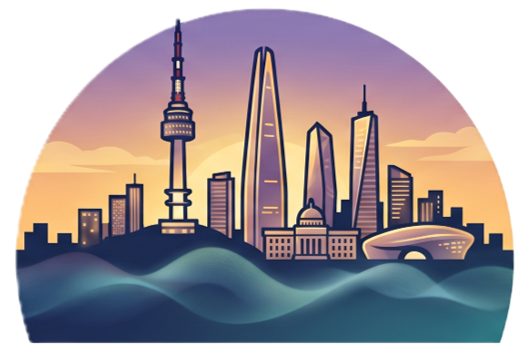

Japanese passport holders
Japan is included in Korea's temporary K-ETA exemption through December 31, 2026. Travelers may still apply for K-ETA if they want the arrival-card benefit, but the official notice says the fee is charged in that case.

KJDB 2026 Korea-Japan Database Workshop 2026Tourist Information
A practical Seoul guide for participants visiting from Japan.
Japan is included in Korea's temporary K-ETA exemption through December 31, 2026. Travelers may still apply for K-ETA if they want the arrival-card benefit, but the official notice says the fee is charged in that case.
The AREX Express Train runs nonstop to Seoul Station in about 43 minutes from Terminal 1 or 51 minutes from Terminal 2. The all-stop train is cheaper and useful for Hongdae, Gongdeok, and other subway transfers.
Buy or recharge Tmoney at convenience stores and subway stations. Tap when entering and exiting subway gates, and tap again when getting off buses to receive transfer discounts.

Start at Gyeongbokgung Station or Gwanghwamun Station, visit the palace, then walk toward Bukchon Hanok Village and Insadong. Gyeongbokgung is closed on Tuesdays, and wearing a full hanbok allows free palace admission.

Myeongdong is the simplest first stop for cosmetics, fashion, street snacks, currency exchange, and Japanese-friendly service. From there, Namdaemun Market and Namsan are close by taxi or bus.
.jpg?width=1200)
A good evening plan after dinner. Take the cable car, bus, or a walk through Namsan Park for a panoramic view of Seoul. The area is popular with visitors and locals, especially around sunset.
Photos: Gyeongbokgung by Grayswoodsurrey, Myeongdong by Izzatfikry99, and N Seoul Tower by Josh Hallett via Wikimedia Commons.